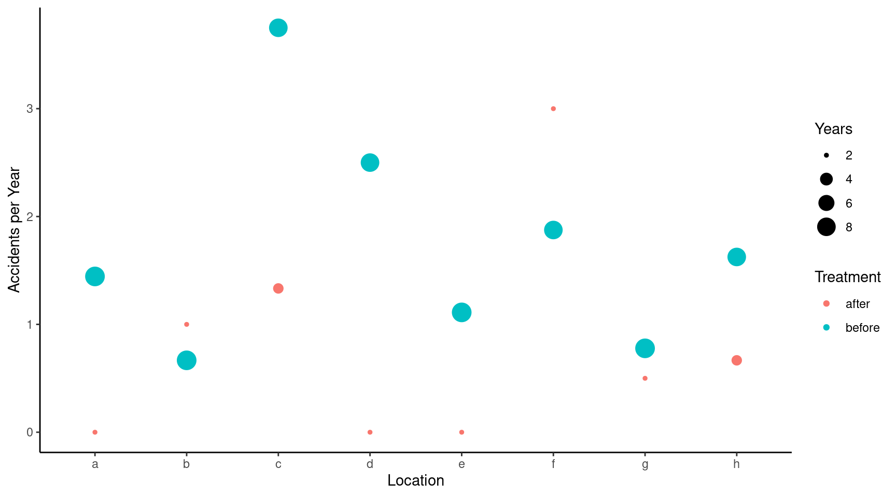
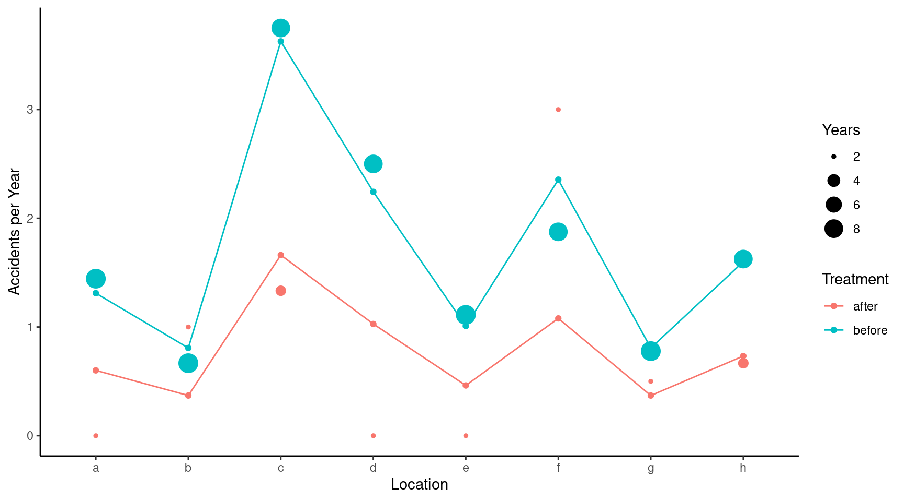
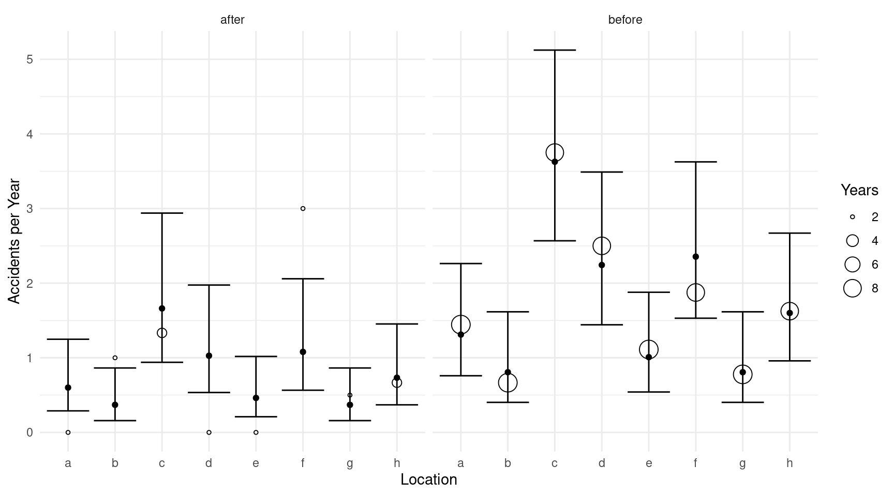
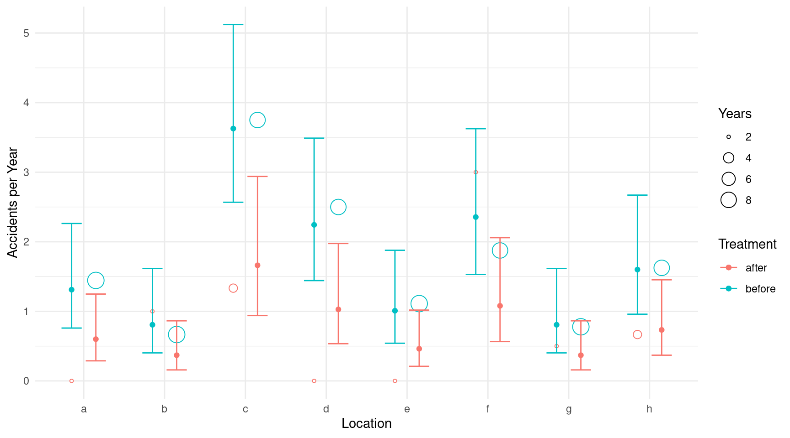
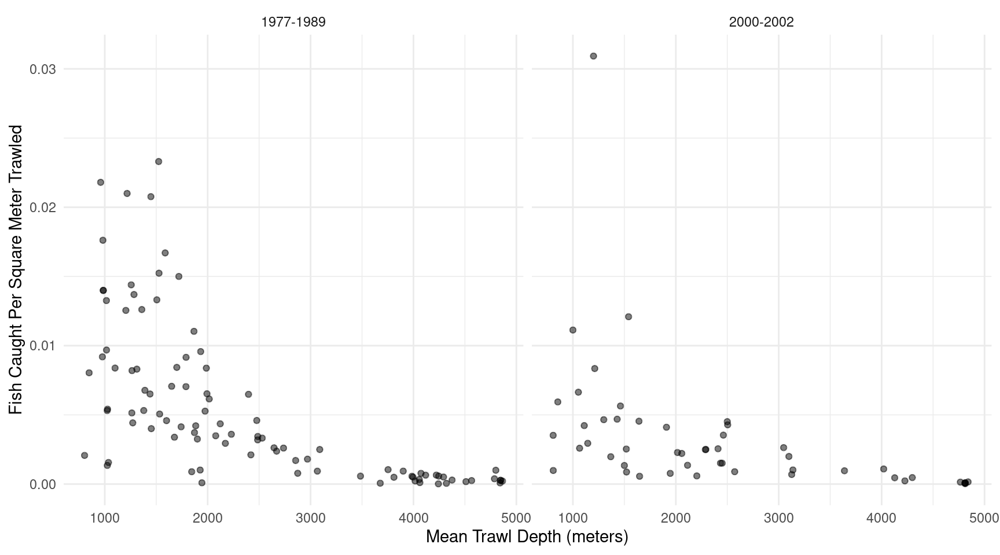
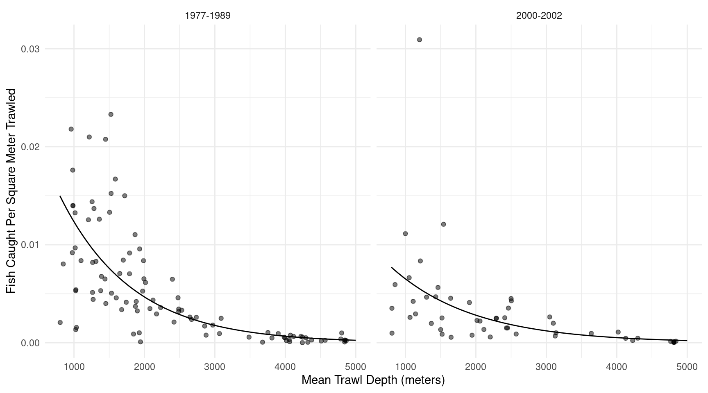
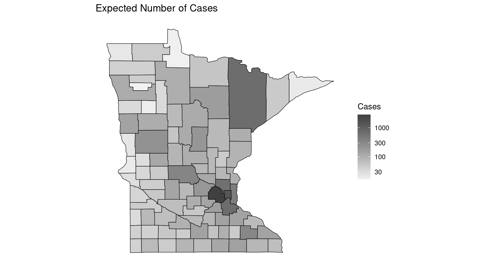
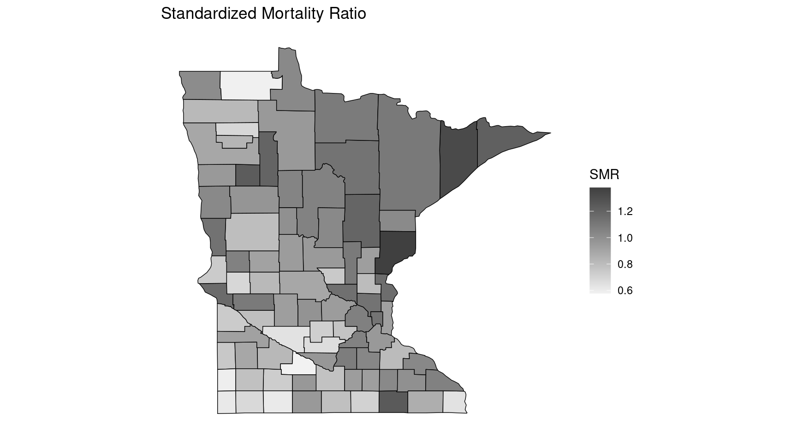
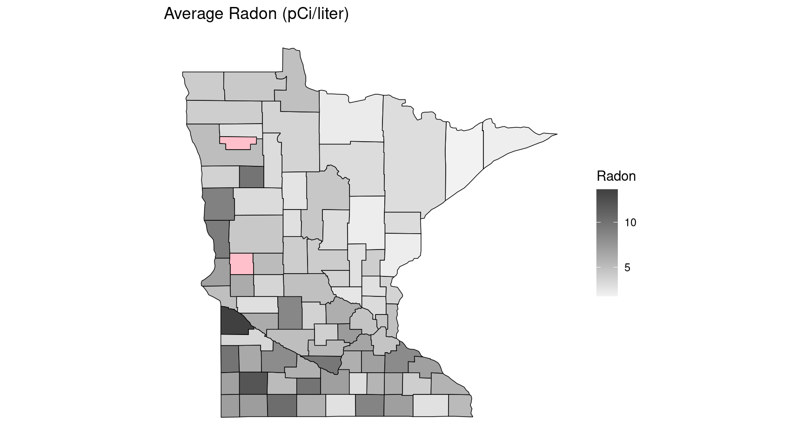

You can also download a PDF copy of this lecture.
The \(i\)-th observed rate \(R_i\) can be written as \[ R_i = C_i/S_i, \] where \(C_i\) is a count and \(S_i\) is the “size” of the interval in which the counts are observed. Examples include fish per minute, epileptic episodes per day, or defects per (square) meter. In some cases \(S_i\) is referred to as the “exposure” of the \(i\)-th observation.
Assume that the count \(C_i\) has a Poisson distribution and that \[ E(C_i) = S_i \underbrace{\exp(\beta_0 + \beta_1 x_{i1} + \cdots + \beta_k x_{ik})}_{\lambda_i}, \] where \(\lambda_i\) is the expected count per unit (e.g., per minute) so that \(S_i\lambda_i\) is then the expected count per \(S_i\) (e.g., per hour if \(S_i\) = 60, per day if \(S_i\) = 1440, or per second if \(S_i\) = 1/60). The expected rate is then \[ E(R_i) = E(C_i/S_i) = E(C_i)/S_i = \exp(\beta_0 + \beta_1 x_{i1} + \cdots + \beta_k x_{ik}), \] if we treat exposure as fixed (like we do \(x_{i1}, x_{i2}, \dots, x_{ik}\)). But rather than using \(R_i\) as the response variable we can use \(C_i\) as the response variable in a Poisson regression model where \[ E(C_i) = S_i \exp(\beta_0 + \beta_1 x_{i1} + \cdots + \beta_k x_{ik}) = \exp(\beta_0 + \beta_1 x_{i1} + \cdots + \beta_k x_{ik} + \log S_i), \] and where \(\log S_i\) is an “offset” variable (i.e., basically an explanatory variable where it’s \(\beta_j\) is “fixed” at one).
Note: If \(S_i\) is a constant for all observations so that \(S_i = S\) then we can write the model as \[ E(C_i) = \exp(\beta_0 + \beta_1 x_{i1} + \cdots + \beta_k x_{ik} + \log S_i) = \exp(\beta_0^* + \beta_1 x_{i1} + \beta_2 x_{i2} + \cdots + \beta_k x_{ik}), \] where \(\beta_0^* = \log(S) + \beta_0\) so that the offset is “absorbed” into \(\beta_0\), and we do not need to be concerned about it. Including an offset is only necessary if \(S_i\) is not the same for all observations.
Using rates as response variables in a linear or nonlinear model without accounting for \(S_i\) is not advisable because of heteroscedasticity due to unequal \(S_i\).
Note that \(E(C_i) = S_iE(R_i)\) and that \(\text{Var}(C_i) = S_iE(R_i)\) if \(C_i\) has a Poisson distribution. The variance of \(R_i\) is then \[ \text{Var}(R_i) = \text{Var}(C_i/S_i) = \text{Var}(C_i)/S_i^2 = E(S_iR_i)/S_i^2 = S_iE(R_i)/S_i^2 = E(R_i)/S_i, \] if we treat \(S_i\) as fixed. So the variance of a rate is inversely proportional to \(S_i\). For example, suppose \(E(R_i) = E(R_{i'}) = 0.5\), but \(S_i = 2\) and \(S_{i'} = 100\) so that \(R_i = C_i/2\) and \(R_{i'} = C_{i'}/100\). Then \[ \text{Var}(R_i) = 0.5/2 = 0.25 > \text{Var}(R_{i'}) = 0.5/100 = 0.005. \] For this reason it is usually not advised to use rates as response variables without either (a) using an appropriate offset variable in Poisson regression or a related model or (b) using weights of \(w_i = S_i/E(R_i)\) (via iteratively weighted least squares with weights of \(w_i = S_i/\hat{y}_i\)).
Software for GLMs (and sometimes linear models) will often permit
specification of an offset variable. In R this is done using
offset in the model formula.
Example: Consider the following data from an observational study of auto accidents.
library(trtools)
head(accidents) accidents years location treatment
1 13 9 a before
2 6 9 b before
3 30 8 c before
4 20 8 d before
5 10 9 e before
6 15 8 f beforep <- ggplot(accidents, aes(x = location, y = accidents/years)) +
geom_point(aes(size = years, color = treatment)) +
labs(x = "Location", y = "Accidents per Year",
size = "Years", color = "Treatment") + theme_classic()
plot(p)
m <- glm(accidents ~ location + treatment + offset(log(years)),
data = accidents, family = poisson)
cbind(summary(m)$coefficients, confint(m)) Estimate Std. Error z value Pr(>|z|) 2.5 % 97.5 %
(Intercept) -0.5099 0.3734 -1.3656 0.172075 -1.29243 0.1770
locationb -0.4855 0.4494 -1.0804 0.279943 -1.41219 0.3784
locationc 1.0176 0.3264 3.1174 0.001825 0.40267 1.6939
locationd 0.5371 0.3563 1.5075 0.131683 -0.15098 1.2601
locatione -0.2624 0.4206 -0.6238 0.532790 -1.11363 0.5588
locationf 0.5859 0.3529 1.6601 0.096897 -0.09389 1.3036
locationg -0.4855 0.4494 -1.0804 0.279943 -1.41219 0.3784
locationh 0.1993 0.3792 0.5255 0.599208 -0.54592 0.9578
treatmentbefore 0.7807 0.2754 2.8343 0.004593 0.27407 1.3616exp(cbind(coef(m), confint(m))) 2.5 % 97.5 %
(Intercept) 0.6006 0.2746 1.194
locationb 0.6154 0.2436 1.460
locationc 2.7666 1.4958 5.441
locationd 1.7110 0.8599 3.526
locatione 0.7692 0.3284 1.749
locationf 1.7966 0.9104 3.683
locationg 0.6154 0.2436 1.460
locationh 1.2205 0.5793 2.606
treatmentbefore 2.1829 1.3153 3.902When using contrast we do need to specify the offset.
Think of it as another explanatory variable.
contrast(m,
a = list(treatment = "before", location = letters[1:8], years = 1),
b = list(treatment = "after", location = letters[1:8], years = 1),
cnames = letters[1:8], tf = exp) estimate lower upper
a 2.183 1.272 3.745
b 2.183 1.272 3.745
c 2.183 1.272 3.745
d 2.183 1.272 3.745
e 2.183 1.272 3.745
f 2.183 1.272 3.745
g 2.183 1.272 3.745
h 2.183 1.272 3.745contrast(m,
a = list(treatment = "after", location = letters[1:8], years = 1),
b = list(treatment = "before", location = letters[1:8], years = 1),
cnames = letters[1:8], tf = exp) estimate lower upper
a 0.4581 0.267 0.786
b 0.4581 0.267 0.786
c 0.4581 0.267 0.786
d 0.4581 0.267 0.786
e 0.4581 0.267 0.786
f 0.4581 0.267 0.786
g 0.4581 0.267 0.786
h 0.4581 0.267 0.786We also need to specify the offset when computing estimated expected rates.
d <- expand.grid(treatment = c("before","after"),
location = letters[1:8], years = 1)
d$yhat <- predict(m, newdata = d, type = "response")
d treatment location years yhat
1 before a 1 1.3110
2 after a 1 0.6006
3 before b 1 0.8068
4 after b 1 0.3696
5 before c 1 3.6269
6 after c 1 1.6615
7 before d 1 2.2431
8 after d 1 1.0276
9 before e 1 1.0085
10 after e 1 0.4620
11 before f 1 2.3553
12 after f 1 1.0789
13 before g 1 0.8068
14 after g 1 0.3696
15 before h 1 1.6001
16 after h 1 0.7330p <- p + geom_point(aes(y = yhat, color = treatment), data = d)
p <- p + geom_line(aes(y = yhat, group = treatment, color = treatment), data = d)
plot(p)
Using predict will produce estimated expected rates.
Confidence intervals for estimating expected counts can be obtained
using either contrast or glmint. We can
estimate the expected number of accidents per year at each location
before treatment.
contrast(m, a = list(treatment = "before", location = letters[1:8], years = 1),
cnames = paste("before at", letters[1:8]), tf = exp) estimate lower upper
before at a 1.3110 0.7595 2.263
before at b 0.8068 0.4027 1.616
before at c 3.6269 2.5678 5.123
before at d 2.2431 1.4421 3.489
before at e 1.0085 0.5415 1.878
before at f 2.3553 1.5302 3.625
before at g 0.8068 0.4027 1.616
before at h 1.6001 0.9587 2.671We can also estimate the expected number of accidents per decade.
contrast(m, a = list(treatment = "before", location = letters[1:8], years = 10),
cnames = paste("before at", letters[1:8]), tf = exp) estimate lower upper
before at a 13.110 7.595 22.63
before at b 8.068 4.027 16.16
before at c 36.269 25.678 51.23
before at d 22.431 14.421 34.89
before at e 10.085 5.415 18.78
before at f 23.553 15.302 36.25
before at g 8.068 4.027 16.16
before at h 16.001 9.587 26.71Alternatively the glmint function can be used, which is
more convenient for producing plots.
d <- expand.grid(treatment = c("before","after"),
location = letters[1:8], years = 1)
glmint(m, newdata = d) fit low upp
1 1.3110 0.7595 2.2629
2 0.6006 0.2889 1.2485
3 0.8068 0.4027 1.6161
4 0.3696 0.1582 0.8635
5 3.6269 2.5678 5.1228
6 1.6615 0.9393 2.9388
7 2.2431 1.4421 3.4890
8 1.0276 0.5347 1.9747
9 1.0085 0.5415 1.8780
10 0.4620 0.2096 1.0180
11 2.3553 1.5302 3.6253
12 1.0789 0.5654 2.0589
13 0.8068 0.4027 1.6161
14 0.3696 0.1582 0.8635
15 1.6001 0.9587 2.6706
16 0.7330 0.3697 1.4532cbind(d, glmint(m, newdata = d)) treatment location years fit low upp
1 before a 1 1.3110 0.7595 2.2629
2 after a 1 0.6006 0.2889 1.2485
3 before b 1 0.8068 0.4027 1.6161
4 after b 1 0.3696 0.1582 0.8635
5 before c 1 3.6269 2.5678 5.1228
6 after c 1 1.6615 0.9393 2.9388
7 before d 1 2.2431 1.4421 3.4890
8 after d 1 1.0276 0.5347 1.9747
9 before e 1 1.0085 0.5415 1.8780
10 after e 1 0.4620 0.2096 1.0180
11 before f 1 2.3553 1.5302 3.6253
12 after f 1 1.0789 0.5654 2.0589
13 before g 1 0.8068 0.4027 1.6161
14 after g 1 0.3696 0.1582 0.8635
15 before h 1 1.6001 0.9587 2.6706
16 after h 1 0.7330 0.3697 1.4532d <- cbind(d, glmint(m, newdata = d))
p <- ggplot(accidents, aes(x = location)) +
geom_point(aes(y = accidents/years, size = years), shape = 21, fill = "white") +
facet_wrap(~ treatment) + theme_minimal() +
labs(x = "Location", y = "Accidents per Year", size = "Years") +
geom_errorbar(aes(ymin = low, ymax = upp), data = d) +
geom_point(aes(y = fit), data = d)
plot(p)
p <- ggplot(accidents, aes(x = location, color = treatment)) +
geom_point(aes(y = accidents/years, size = years),
position = position_dodge(width = 0.6), shape = 21, fill = "white") +
labs(x = "Location", y = "Accidents per Year",
size = "Years", color = "Treatment") + theme_minimal() +
geom_errorbar(aes(ymin = low, ymax = upp), data = d,
position = position_dodge(width = 0.6), width = 0.5) +
geom_point(aes(y = fit), data = d, position = position_dodge(width = 0.6))
plot(p)
Example: Consider the following data from a study that investigated the possible effect of the development of a commercial fishery on deep sea fish abundance. The figure below shows the number of fish per square meter of swept area from 147 trawls by mean depth in meters, and by whether the trawl was during one of two periods. The 1977-1989 period was from before the development of a commercial fishery, and the period 2000-2002 was when the fishery was active.
library(COUNT)
data(fishing)
head(fishing) site totabund density meandepth year period sweptarea
1 1 76 0.0020703 804 1978 1977-1989 36710
2 2 161 0.0035198 808 2001 2000-2002 45741
3 3 39 0.0009805 809 2001 2000-2002 39775
4 4 410 0.0080392 848 1979 1977-1989 51000
5 5 177 0.0059334 853 2002 2000-2002 29831
6 6 695 0.0218005 960 1980 1977-1989 31880p <- ggplot(fishing, aes(x = meandepth, y = totabund/sweptarea)) +
geom_point(alpha = 0.5) + facet_wrap(~ period) + theme_minimal() +
labs(x = "Mean Trawl Depth (meters)",
y = "Fish Caught Per Square Meter Trawled")
plot(p) An appropriate model for these data might be as follows.
m <- glm(totabund ~ period * meandepth + offset(log(sweptarea)),
family = poisson, data = fishing)
summary(m)$coefficients Estimate Std. Error z value Pr(>|z|)
(Intercept) -3.4228194 1.490e-02 -229.672 0.000e+00
period2000-2002 -0.7711169 2.973e-02 -25.937 2.547e-148
meandepth -0.0009713 7.965e-06 -121.945 0.000e+00
period2000-2002:meandepth 0.0001318 1.524e-05 8.651 5.090e-18d <- expand.grid(sweptarea = 1, period = c("1977-1989","2000-2002"),
meandepth = seq(800, 5000, length = 100))
d$yhat <- predict(m, newdata = d, type = "response")
p <- p + geom_line(aes(y = yhat), data = d)
plot(p) What is the expected number of fish per square meter in 1977-1989 at depths of 1000, 2000, 3000, 4000, and 5000 meters? What is it in 2000-2002?
contrast(m,
a = list(sweptarea = 1,
meandepth = c(1000,2000,3000,4000,5000), period = "1977-1989"),
cnames = c("1000m","2000m","3000m","4000m","5000m"), tf = exp) estimate lower upper
1000m 0.0123500 0.0121470 0.0125564
2000m 0.0046757 0.0046128 0.0047395
3000m 0.0017702 0.0017281 0.0018134
4000m 0.0006702 0.0006450 0.0006963
5000m 0.0002537 0.0002406 0.0002676contrast(m,
a = list(sweptarea = 1,
meandepth = c(1000,2000,3000,4000,5000), period = "2000-2002"),
cnames = c("1000m","2000m","3000m","4000m","5000m"), tf = exp) estimate lower upper
1000m 0.0065168 0.0063254 0.0067139
2000m 0.0028149 0.0027508 0.0028806
3000m 0.0012159 0.0011702 0.0012635
4000m 0.0005252 0.0004942 0.0005582
5000m 0.0002269 0.0002084 0.0002470Note that we can change the units of swept area very easily here. There are 10,000 square meters in a hectare. Here are the expected number of fish per hectare.
contrast(m,
a = list(sweptarea = 10000,
meandepth = c(1000,2000,3000,4000,5000), period = "1977-1989"),
cnames = c("1000m","2000m","3000m","4000m","5000m"), tf = exp) estimate lower upper
1000m 123.500 121.470 125.564
2000m 46.757 46.128 47.395
3000m 17.702 17.281 18.134
4000m 6.702 6.450 6.963
5000m 2.537 2.406 2.676contrast(m,
a = list(sweptarea = 10000,
meandepth = c(1000,2000,3000,4000,5000), period = "2000-2002"),
cnames = c("1000m","2000m","3000m","4000m","5000m"), tf = exp) estimate lower upper
1000m 65.168 63.254 67.139
2000m 28.149 27.508 28.806
3000m 12.159 11.702 12.635
4000m 5.252 4.942 5.582
5000m 2.269 2.084 2.470What is the rate ratio of fish per square meter in 2000-2002 versus 1977-1989 at 1000, 2000, 3000, 4000, and 5000 meters?
contrast(m,
a = list(sweptarea = 1,
meandepth = c(1000,2000,3000,4000,5000), period = "2000-2002"),
b = list(sweptarea = 1,
meandepth = c(1000,2000,3000,4000,5000), period = "1977-1989"),
cnames = c("1000m","2000m","3000m","4000m","5000m"), tf = exp) estimate lower upper
1000m 0.5277 0.5100 0.5460
2000m 0.6020 0.5861 0.6183
3000m 0.6869 0.6565 0.7187
4000m 0.7837 0.7293 0.8421
5000m 0.8941 0.8087 0.9885Here it is for 1977-1989 versus 2000-2002.
contrast(m,
a = list(sweptarea = 1,
meandepth = c(1000,2000,3000,4000,5000), period = "1977-1989"),
b = list(sweptarea = 1,
meandepth = c(1000,2000,3000,4000,5000), period = "2000-2002"),
cnames = c("1000m","2000m","3000m","4000m","5000m"), tf = exp) estimate lower upper
1000m 1.895 1.832 1.961
2000m 1.661 1.617 1.706
3000m 1.456 1.391 1.523
4000m 1.276 1.188 1.371
5000m 1.118 1.012 1.237How does the expected number of fish per square meter change per 1000m of depth?
# increasing depth by 1000m
contrast(m,
a = list(sweptarea = 1, meandepth = 2000, period = c("1977-1989","2000-2002")),
b = list(sweptarea = 1, meandepth = 1000, period = c("1977-1989","2000-2002")),
cnames = c("1977-1989","2000-2002"), tf = exp) estimate lower upper
1977-1989 0.3786 0.3727 0.3846
2000-2002 0.4320 0.4211 0.4431# decreasing depth by 1000m
contrast(m,
a = list(sweptarea = 1, meandepth = 1000, period = c("1977-1989","2000-2002")),
b = list(sweptarea = 1, meandepth = 2000, period = c("1977-1989","2000-2002")),
cnames = c("1977-1989","2000-2002"), tf = exp) estimate lower upper
1977-1989 2.641 2.600 2.683
2000-2002 2.315 2.257 2.375Ratios are unit-less, so we get the same rate ratios when considering fish per hectare (i.e., per 10000 square meters).
# increasing depth by 1000m
contrast(m,
a = list(sweptarea = 10000,
meandepth = 2000, period = c("1977-1989","2000-2002")),
b = list(sweptarea = 10000,
meandepth = 1000, period = c("1977-1989","2000-2002")),
cnames = c("1977-1989","2000-2002"), tf = exp) estimate lower upper
1977-1989 0.3786 0.3727 0.3846
2000-2002 0.4320 0.4211 0.4431# decreasing depth by 1000m
contrast(m,
a = list(sweptarea = 10000,
meandepth = 1000, period = c("1977-1989","2000-2002")),
b = list(sweptarea = 10000,
meandepth = 2000, period = c("1977-1989","2000-2002")),
cnames = c("1977-1989","2000-2002"), tf = exp) estimate lower upper
1977-1989 2.641 2.600 2.683
2000-2002 2.315 2.257 2.375In epidemiology, the standardized mortality ratio (SMR) is the ratio of the observed number of deaths and the (estimated) expected number of deaths. Poisson regression with an offset can be used to model the SMR to determine if the number of deaths tends to be higher or lower than we would expect.
Example: Here is an example of an observational study using a Poisson regression model to investigate the relationship between lung cancer and radon exposure in counties in Minnesota.
Note: The data manipulation and plotting is quite a bit more complicated than what you will normally see in this class, but I have included it in case you might be interested to see the code.
First we will process the data containing the observed and expected number of deaths due to lung cancer, where the latter are based on the known distribution of age and gender in the county.
lung <- read.table("http://faculty.washington.edu/jonno/book/MNlung.txt",
header = TRUE, sep = "\t") %>%
mutate(obs = obs.M + obs.F, exp = exp.M + exp.F) %>%
dplyr::select(X, County, obs, exp) %>%
rename(county = County) %>%
mutate(county = tolower(county)) %>%
mutate(county = ifelse(county == "red", "red lake", county))
head(lung) X county obs exp
1 1 aitkin 92 76.9
2 2 anoka 677 600.5
3 3 becker 105 107.9
4 4 beltrami 101 105.7
5 5 benton 61 81.4
6 6 big stone 32 27.4Now we will read in data to estimate the average radon exposure of residents of each county.
radon <- read.table("http://faculty.washington.edu/jonno/book/MNradon.txt",
header = TRUE) %>% group_by(county) %>%
summarize(radon = mean(radon)) %>% rename(X = county)
head(radon)# A tibble: 6 × 2
X radon
<int> <dbl>
1 1 2.08
2 2 3.21
3 3 3.18
4 4 3.66
5 5 3.78
6 6 4.93Next we merge the two data frames.
radon <- left_join(lung, radon) %>% dplyr::select(-X)
head(radon) county obs exp radon
1 aitkin 92 76.9 2.075
2 anoka 677 600.5 3.212
3 becker 105 107.9 3.175
4 beltrami 101 105.7 3.657
5 benton 61 81.4 3.775
6 big stone 32 27.4 4.933For fun we can make some plots of the data by county.
library(maps)
dstate <- map_data("state") %>%
filter(region == "minnesota")
dcounty <- map_data("county") %>%
filter(region == "minnesota") %>%
rename(county = subregion)
dcounty <- left_join(dcounty, radon) %>%
mutate(smr = obs/exp)no_axes <- theme_minimal() + theme(
axis.text = element_blank(),
axis.line = element_blank(),
axis.ticks = element_blank(),
panel.border = element_blank(),
panel.grid = element_blank(),
axis.title = element_blank()
)
p <- ggplot(dcounty, aes(x = long, y = lat, group = group)) + coord_fixed(1.3) +
geom_polygon(aes(fill = exp), color = "black", size = 0.25) +
scale_fill_gradient(low = grey(0.95), high = grey(0.25),
trans = "log10", na.value = "pink") +
theme(legend.position = c(0.8,0.4)) + no_axes +
ggtitle("Expected Number of Cases") + labs(fill = "Cases")
plot(p)
p <- ggplot(dcounty, aes(x = long, y = lat, group = group)) + coord_fixed(1.3) +
geom_polygon(aes(fill = smr), color = "black", size = 0.25) +
scale_fill_gradient(low = grey(0.95), high = grey(0.25), na.value = "pink") +
theme(legend.position = c(0.8,0.4)) + no_axes +
ggtitle("Standardized Mortality Ratio") + labs(fill = "SMR")
plot(p)
p <- ggplot(dcounty, aes(x = long, y = lat, group = group)) + coord_fixed(1.3) +
geom_polygon(aes(fill = radon), color = "black", size = 0.25) +
scale_fill_gradient(low = grey(0.95), high = grey(0.25), na.value = "pink") +
theme(legend.position = c(0.8,0.4)) + no_axes +
ggtitle("Average Radon (pCi/liter)") + labs(fill = "Radon")
plot(p) How does the expected SMR relate to radon? Consider the Poisson regression model \[ \log E(Y_i/E_i) = \beta_0 + \beta_1r_i, \] where \(Y_i\) and \(E_i\) are the observed and expected number of lung cancer deaths (or cases), respectively, in the \(i\)-th county, and \(r_i\) is the average radon exposure in the \(i\)-th county. Here \(Y_i/E_i\) is the SMR for the \(i\)-th county. We can also write this model as \[ \log E(Y_i) = \log E_i + \beta_0 + \beta_1r_i, \] so \(\log E_i\) is an offset.
m <- glm(obs ~ offset(log(exp)) + radon,
family = poisson, data = dcounty)
summary(m)$coefficients Estimate Std. Error z value Pr(>|z|)
(Intercept) 0.2107 0.005619 37.51 6.954e-308
radon -0.0421 0.001195 -35.24 4.366e-272exp(cbind(coef(m), confint(m))) 2.5 % 97.5 %
(Intercept) 1.2346 1.2211 1.248
radon 0.9588 0.9565 0.961We should be careful and remember the ecological fallacy which states that relationships at the group level (e.g., county) do not necessarily hold at the individual level. Radon may be related to other variables (e.g., smoking) that affect the risk of lung cancer.